SiM (Silence iz Mine) es una banda japonesa de metal alternativo foramada durante 2004 en Shonan (Kanagawa).
Discografia |
| Nombre | Detalles | Portada |
|---|---|---|
Silence iz Mine |
|
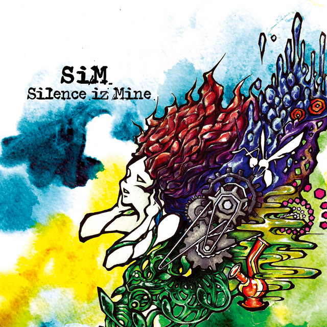 |
Seeds of Hope |
|
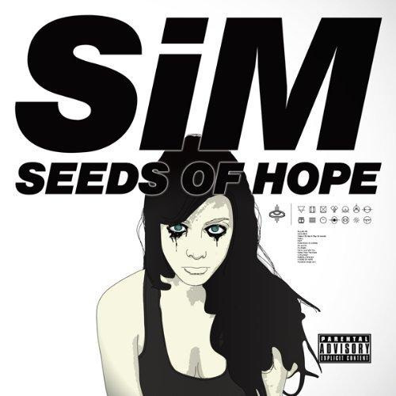 |
Pandora |
|
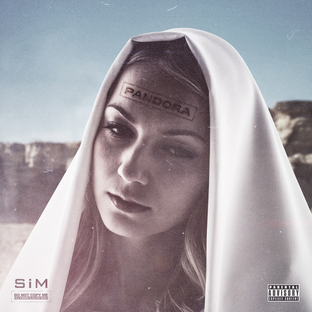 |
The Beautiful People |
|
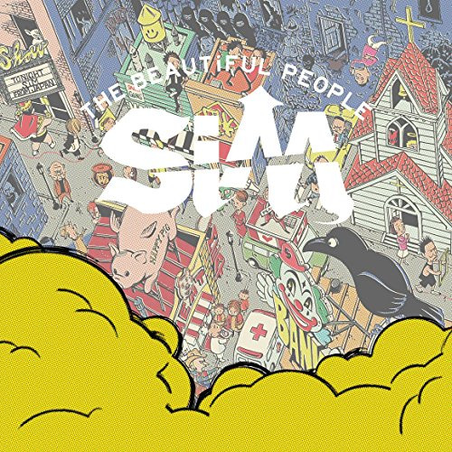 |
Thank God, There Are Hundreds Of Ways To Kill Enemies |
|
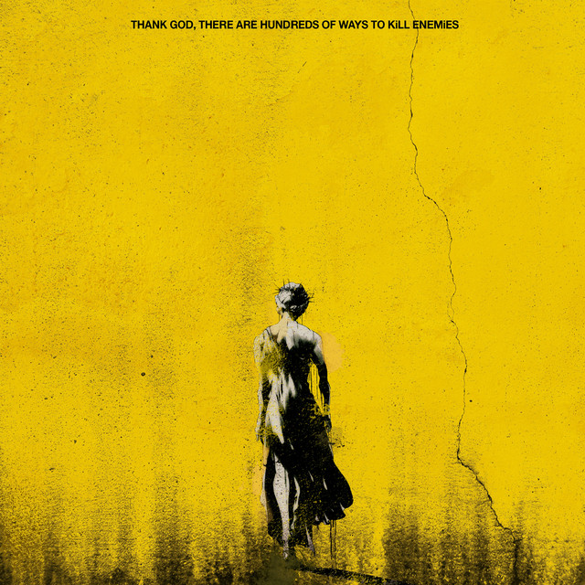 |
PLAYDEAD |
|
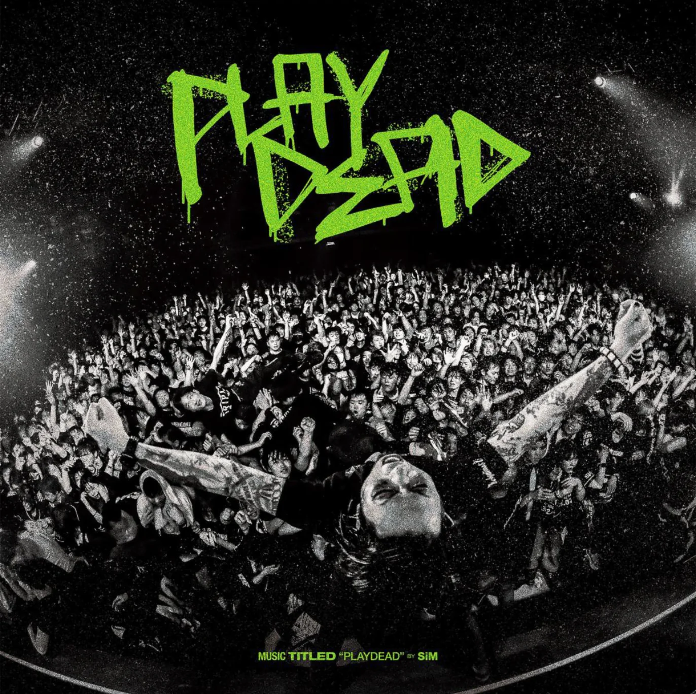 |
Canciones licenciadas |
| Titulo | Año | Apariciones | |
|---|---|---|---|
Existence |
2015 | Shingeki no Bahamut: Genesis anime theme song. | 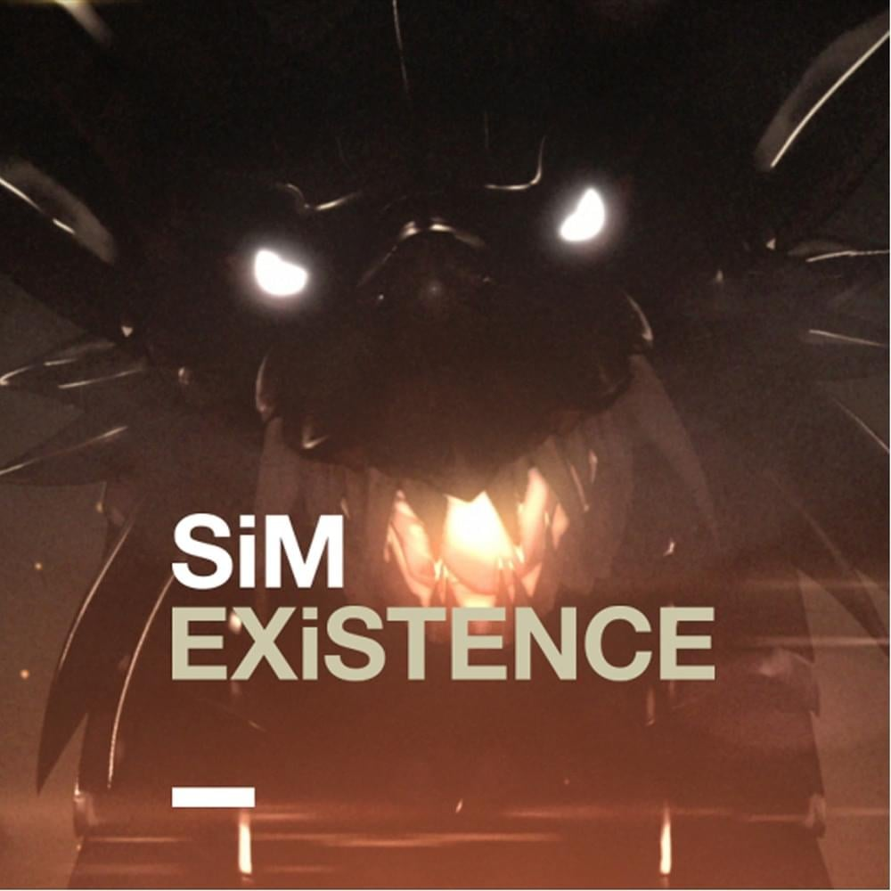 |
"No Future" |
2016 | Arcade game Mobile Suit Gundam Extreme Vs Maxi Boost ON opening theme song. | 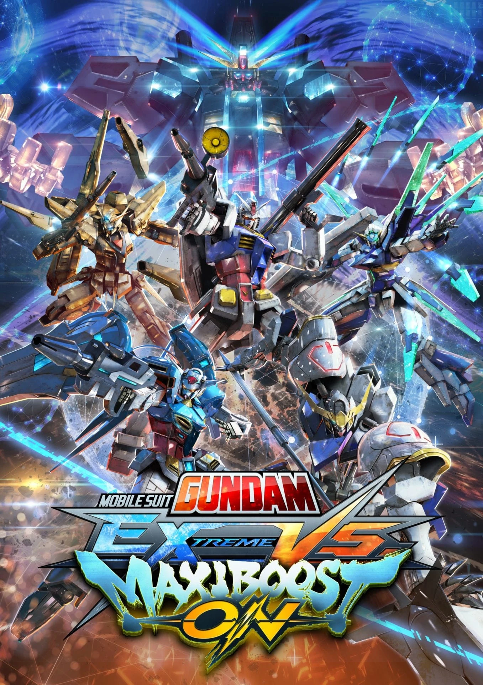 |
A/The Sound of Breath |
2017 | PS4 game Ryū ga Gotoku/Yakuza Kiwami 2 theme song. | 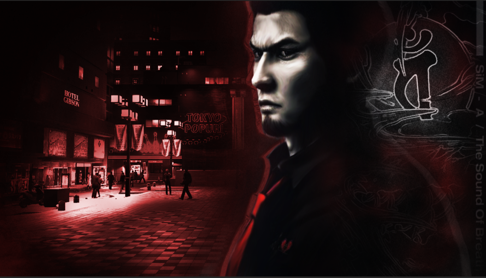 |
The Rumbling |
2022 | Attack on Titan: The Final Season Part 2 anime opening theme song. | 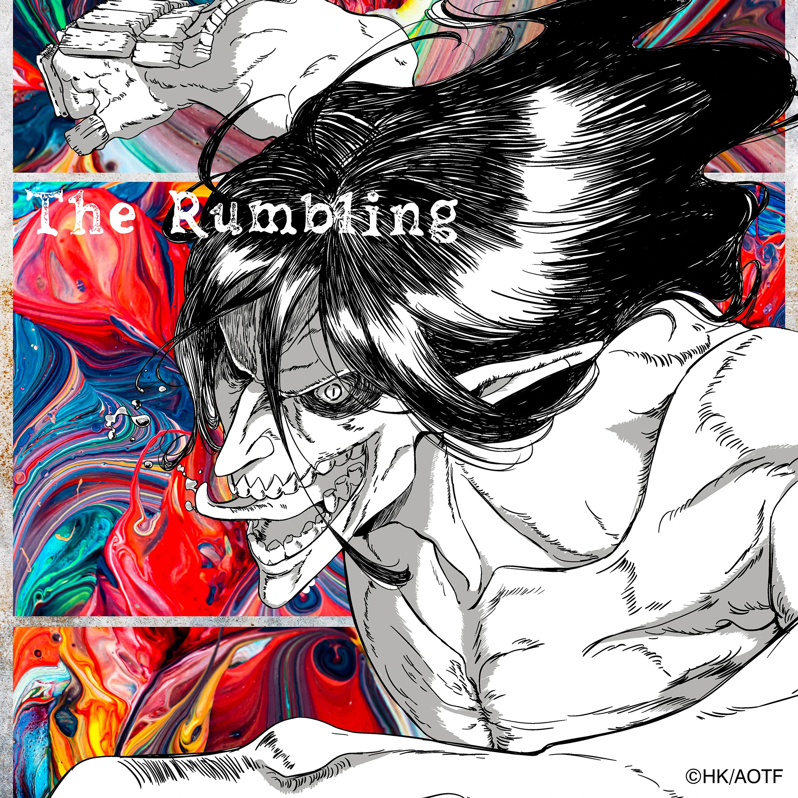 |
Under the Tree |
2023 | Attack on Titan: The Final Season Part 3 anime ending theme song. | 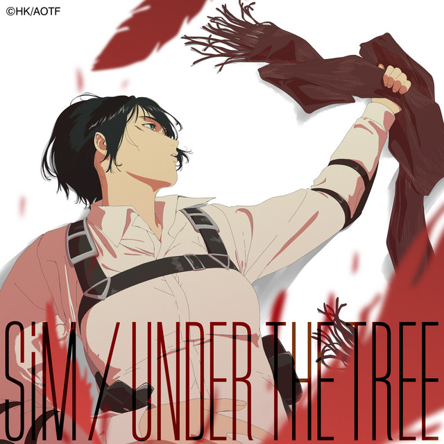 |
Red |
2023 | Kengan Ashura Season 2 anime opening theme song. | 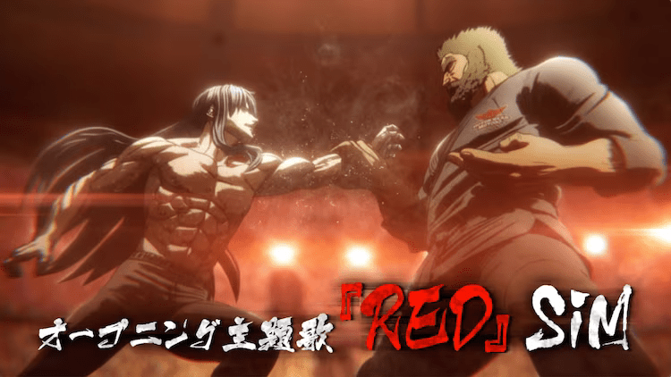 |
Premios y Nominaciones |
| Premio | Año | Categoria | Work/nominee | Resultado |
|---|---|---|---|---|
Billboard Japan Music Awards |
2013 | Independent Artist of the Year | SiM | Nominated |
CD Shop Awards |
2013 | Best Live Video | Dusk and Dawn | Won |
Space Shower Music Video Awards |
2014 | Best Video | Who's Next | Nominated |
Space Shower Music Awards |
2016 | Best Punk / Loud Rock Artist | SiM | Nominated |
7th Crunchyroll Anime Awards |
2023 | Best Opening Sequence | "The Rumbling (from Attack on Titan: The Final Season Part 2 anime) | Won |
| Best Anime Song | Won |